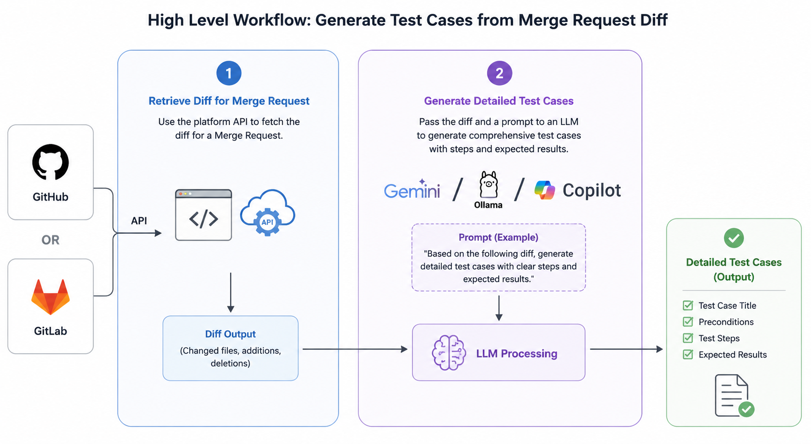
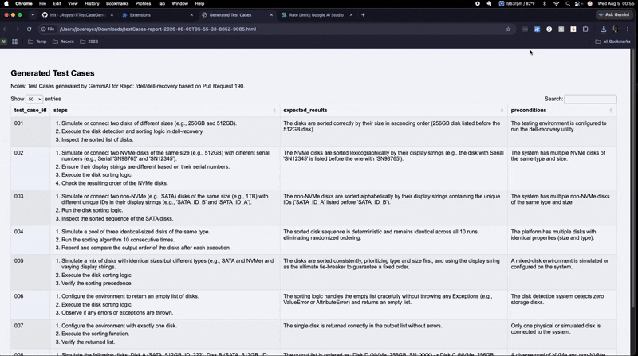

In my previous post I outlined the process of retrieving a diff for a PR in GitHub and passing it to an LLM to generate
detailed test cases based on the pull request. Shortly afterward, I had the idea of bundling the entire end-to-end
process into a Google Chrome extension, allowing the process to be completed with a few clicks of a button.
For reference, This was my thought process for generating detailed test cases using an LLM/AI, based on a Diff from a pull request in Github.

A Bit of History
A few years ago, while working as an SDET at a healthcare company, I built a Chrome extension used internally by Quality Engineers and Developers across teams. It solved the lengthy, cumbersome process of generating internal serial numbers — required for testing purchase and product registration workflows in lower environments. By leveraging a handful of internal APIs, the tool reduced that process to two clicks and under 15 seconds.Fast forward to present day
Since the goal of this chrome extension is to deliver detailed test cases with preconditions and expected results, I needed to figure out how this should be rendered in the UI. Chome extensions do not have much real estate in the UI, so rendering large amounts of data in a manner that can be digested by the user is unrealistic, in my opinion.I decided the best course of action was to allow the user to download the test cases once Gemini AI returned a response. This presents another challenge - How should I organize the data in the downloaded file? I immediately thought of excel, but what if the user does not have this installed on their machine? Sure - there are alternatives, but I did not want the user to jump through unnecessary hoops.
Everyone has a web browser installed on their machine, regardless of their operating system. With this in mind, I decided to format the response returned by Gemini AI to build an HTML document that renders a table with the expected test cases. I leveraged "dataTables" via a CDN to do the heavy lifting in regards to formatting, which was a game changer.
Another challenge - due to the limited space with in the UI - was figuring out how to let the user know a request was in progress. Since I am using Bootstrap (v5.3.3), I could simply use a spinner while a request is in progress, but where should this be rendered? I decided the best course of action was to reuse the existing elements in the UI and overwrite them depending on the action the tool was performing. This allowed me to save space and keep the UI a bit cleaner than some of the alternatives I had previously explored.
Chrome Extension Demo
Workflow- User clicks on the Chrome extension icon in the browser.
- User selects the desired repository in Github
- Pull Requests with an open status are returned.
- User selects Pull Request and downloads the Diff.
- User clicks on Generate button, which sends the Diff to Gemini AI
- The OS Native download window automatically appears, allowing the user to save the test case results.

Viewing the Downloaded Test Cases Once the file has been downloaded, the user can open the html file to view the generated test cases.
For reference, I decided to include the Github repository and Pull Request number at the top of the page.
Since I am using "dataTables", the "search" text field was an option I thought would be useful to include.

Conclusion
I can honestly say I am happy with how this project turned out.My goal was to build something that took the stress out of analyzing a pull request to determine areas of focus. There were a number of decisions I had to make along the way - and a number of good alternatives I passed on.
I can see myself revisiting this project again in the near future... perhaps introducing an option that allows the user to select from various AI models.
I hope you have enjoyed this post. Thanks for watching!